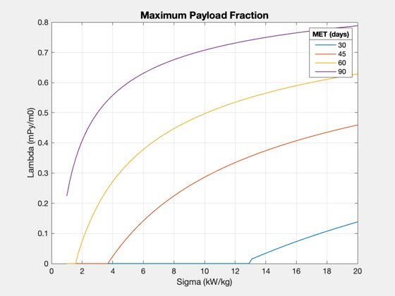

Contents
Mars straight line trajectory
Study the dependency on specific power. What is necessary for a fast Mars trip? The model is:
P = 1/2 T uE/eta
mDot = T/uE
m = (1+f)mF + mE + mP
mE = P/sigma
mF = mDot*tau
------------------------------------------------------------------------- See also Straight2DStructure, ZeroPayloadTime, OptimalExhaustVelocity -------------------------------------------------------------------------
%-------------------------------------------------------------------------- % Copyright (c) 2016 Princeton Satellite Systems, Inc. % All rights reserved. %--------------------------------------------------------------------------
Problem definition
Constants
year = 365.25*86400; % s au = Constant('au'); % km % Mission parameters nYears = 0.3; % distance = 0.5*au; duration = nYears*year; % Engine parameters payload = 20000; % kg uExhaust = 100; % km/s sigma = 1000; % W/kg eta = 0.4; % fusion power to thrust sR = 0.05; % Approximate requested DV avgV = distance/duration; % average velocity, km/s peakV = 2*avgV; estDV = 2*peakV; fprintf('Requested DV: %.1f km/s\n',estDV) % Maximum thrust from uE and eta, given 20 MW limit Pmin = 0.5e6; Pmax = 20e6; Tmax = 2*Pmax*eta/(uExhaust*1e3) Tmin = 2*Pmin*eta/(uExhaust*1e3) fprintf('Thrust range: %.1f to %.1f N\n',Tmin,Tmax) d = Straight2DStructure; d.mP = payload; % payload mass (kg) d.dF = distance; % distance traversed, km d.tF = nYears*year; % final time d.uE = uExhaust; % exhaust velocity, km/s d.f = sR; % fuel structural fraction (tanks) % additional fields for optimization d.sigma = sigma; % specific power, W/kg d.eta = eta; % thrust efficiency d.v0 = 0; % approx initial velocity (km/s)
Requested DV: 31.6 km/s
Tmax =
160
Tmin =
4
Thrust range: 4.0 to 160.0 N
Array of sigmas
sigmas = linspace(1000,20*1000); uEs = [50 100 200]; tMin = []; for j = 1:length(uEs) d.uE = uEs(j); for k = 1:length(sigmas) d.sigma = sigmas(k); tMin(j,k) = ZeroPayloadTime( d ); end end titleStr = sprintf('Straight-line Trip Time - %g AU - Effect of uE',distance/au); Plot2D(sigmas*1e-3,tMin/86400,'Sigma (kW/kg)','Minimum Time (days)',titleStr) ll = legend(num2str(uEs')); ll.Title.String = 'uE (km/s)'; yy = axis; xM = mean(yy(1:2)); yM = mean(yy(3:4)); text(xM,yM,sprintf('d: %g AU\neta: %g\nfS: %g kg/kg',d.dF/au,d.eta,d.f),... 'fontsize',12)

Different efficiencies
d.uE = uExhaust; % exhaust velocity, km/s sigmas = linspace(1000,20*1000); etas = [0.3 0.5 0.7]; tMin = []; for j = 1:length(uEs) d.eta = etas(j); for k = 1:length(sigmas) d.sigma = sigmas(k); tMin(j,k) = ZeroPayloadTime( d ); end end titleStr = sprintf('Straight-line Trip Time - %g AU - Effect of eta',distance/au); Plot2D(sigmas*1e-3,tMin/86400,'Sigma (kW/kg)','Minimum Time (days)',titleStr) ll = legend(num2str(etas')); ll.Title.String = '\eta'; yy = axis; xM = mean(yy(1:2)); yM = mean(yy(3:4)); text(xM,yM,sprintf('d: %g AU\nuE: %g km/s\nfS: %g kg/kg',d.dF/au,d.uE,d.f),... 'fontsize',12)
Structural fraction
d.uE = uExhaust; % exhaust velocity, km/s d.eta = eta; % thrust efficiency sigmas = linspace(1000,20*1000); fs = [0.02 0.05 0.08]; tMin = []; for j = 1:length(uEs) d.f = fs(j); for k = 1:length(sigmas) d.sigma = sigmas(k); tMin(j,k) = ZeroPayloadTime( d ); end end titleStr = sprintf('Straight-line Trip Time - %g AU - Effect of f',distance/au); Plot2D(sigmas*1e-3,tMin/86400,'Sigma (kW/kg)','Minimum Time (days)',titleStr) ll = legend(num2str(fs')); ll.Title.String = 'fS'; yy = axis; xM = mean(yy(1:2)); yM = mean(yy(3:4)); text(xM,yM,sprintf('d: %g AU\nuE: %g km/s\neta: %g',d.dF/au,d.uE,d.eta),... 'fontsize',12)
Optimal exhaust velocity
This is the exhaust velocity that will maximize payload fraction. This depends on the trip time tF. As sigma increases, so does the optimal exhaust velocity.
d.uE = uExhaust; % exhaust velocity, km/s d.eta = eta; % thrust efficiency d.f = sR; d.mP = 0; tDurs = [30 45 60 90]; sigmas = linspace(1000,20*1000); uEOpt = []; lambda = []; % this has to be for a fixed set of times instead! for j = 1:length(tDurs) d.tF = tDurs(j)*86400; for k = 1:length(sigmas) d.sigma = sigmas(k); [uEOpt(j,k),lambda(j,k),eflag] = OptimalExhaustVelocity( d ); % if eflag ~= 1 % keyboard; % end end end titleStr = sprintf('Optimal Exhaust Velocity - %g AU',distance/au); Plot2D(sigmas*1e-3,uEOpt,'Sigma (kW/kg)',{'Exhaust Velocity (km/s)'},titleStr) yy = axis; xM = yy(1) + 0.25*(yy(2)-yy(1)); yM = yy(3) + 0.75*(yy(4)-yy(3)); text(xM,yM,sprintf('d: %g AU\nf: %g kg/kg\neta: %g',d.dF/au,d.f,d.eta),... 'fontsize',12) ll = legend(num2str(tDurs')); ll.Title.String = 'MET (days)'; Plot2D(sigmas*1e-3,lambda,'Sigma (kW/kg)','Lambda (mPy/m0)','Maximum Payload Fraction') ll = legend(num2str(tDurs')); ll.Title.String = 'MET (days)';
Warning: Distance not achievable for sigma Warning: Distance not achievable for sigma Warning: Distance not achievable for sigma Warning: Distance not achievable for sigma Warning: Distance not achievable for sigma Warning: Distance not achievable for sigma Warning: Distance not achievable for sigma Warning: Distance not achievable for sigma Warning: Distance not achievable for sigma Warning: Distance not achievable for sigma Warning: Distance not achievable for sigma Warning: Distance not achievable for sigma Warning: Distance not achievable for sigma Warning: Distance not achievable for sigma Warning: Distance not achievable for sigma Warning: Distance not achievable for sigma Warning: Distance not achievable for sigma Warning: Distance not achievable for sigma Warning: Distance not achievable for sigma Warning: Distance not achievable for sigma Warning: Distance not achievable for sigma Warning: Distance not achievable for sigma Warning: Distance not achievable for sigma Warning: Distance not achievable for sigma Warning: Distance not achievable for sigma Warning: Distance not achievable for sigma Warning: Distance not achievable for sigma Warning: Distance not achievable for sigma Warning: Distance not achievable for sigma Warning: Distance not achievable for sigma Warning: Distance not achievable for sigma Warning: Distance not achievable for sigma Warning: Distance not achievable for sigma Warning: Distance not achievable for sigma Warning: Distance not achievable for sigma Warning: Distance not achievable for sigma Warning: Distance not achievable for sigma Warning: Distance not achievable for sigma Warning: Distance not achievable for sigma Warning: Distance not achievable for sigma Warning: Distance not achievable for sigma Warning: Distance not achievable for sigma Warning: Distance not achievable for sigma Warning: Distance not achievable for sigma Warning: Distance not achievable for sigma Warning: Distance not achievable for sigma Warning: Distance not achievable for sigma Warning: Distance not achievable for sigma Warning: Distance not achievable for sigma Warning: Distance not achievable for sigma Warning: Distance not achievable for sigma Warning: Distance not achievable for sigma Warning: Distance not achievable for sigma Warning: Distance not achievable for sigma Warning: Distance not achievable for sigma Warning: Distance not achievable for sigma Warning: Distance not achievable for sigma Warning: Distance not achievable for sigma Warning: Distance not achievable for sigma Warning: Distance not achievable for sigma Warning: Distance not achievable for sigma Warning: Distance not achievable for sigma Warning: Distance not achievable for sigma Warning: Distance not achievable for sigma Warning: Distance not achievable for sigma Warning: Distance not achievable for sigma Warning: Distance not achievable for sigma Warning: Distance not achievable for sigma Warning: Distance not achievable for sigma Warning: Distance not achievable for sigma Warning: Distance not achievable for sigma Warning: Distance not achievable for sigma Warning: Distance not achievable for sigma Warning: Distance not achievable for sigma Warning: Distance not achievable for sigma Warning: Distance not achievable for sigma Warning: Distance not achievable for sigma Warning: Distance not achievable for sigma Warning: Distance not achievable for sigma Warning: Distance not achievable for sigma Warning: Distance not achievable for sigma Warning: Distance not achievable for sigma
How far can you go in 30 days?
sigmas = linspace(1000,20*1000); durs = [30 60 90]; d.uE = uExhaust; % exhaust velocity, km/s d.eta = eta; % thrust efficiency d.f = sR; d.mP = 0; for j = 1:length(durs) for k = 1:length(sigmas) dF(j,k) = ZeroPayloadDistance(durs(j)*86400,uExhaust,sigmas(k),eta,sR); end end Plot2D(sigmas*1e-3,dF/au,'Sigma (kW/kg)','Distance Achieved (AU)','Zero Payload Distance') ll = legend(num2str(durs')); ll.Title.String = 'tDur (days)'; yy = axis; xM = mean(yy(1:2)); yM = mean(yy(3:4)); text(xM,yM,sprintf('uE: %g km/s\neta: %g\nf: %g kg/kg',d.f,d.eta,d.uE),... 'fontsize',12)
Reasonable payload fraction - fixed uE
fracP = 0.1; d.uE = 80; % exhaust velocity, km/s d.eta = 0.5; % thrust efficiency d.f = sR; d.mP = 0; sigmas = linspace(1000,20*1000); uEs = [80 120 200]; for j = 1:length(uEs) d.uE = uEs(j) for k = 1:length(sigmas) d.sigma = sigmas(k); tDur(j,k) = ComputeDurationFraction( fracP, d ); end end Plot2D(sigmas*1e-3,tDur/86400,'Sigma (kW/kg)','Duration (days)','Duration for 0.1 Payload Fraction') ll = legend(num2str(uEs')); ll.Title.String = 'uE (km/s)'; yy = axis; xM = mean(yy(1:2)); yM = mean(yy(3:4)); text(xM,yM,sprintf('d: %g AU\neta: %g\nf: %g kg/kg',d.dF/au,d.eta,d.f),... 'fontsize',12) Figui; %-------------------------------------- % $Id: 08406fdbe80f586e3aedd5cc3f583ab4733831ef $
d =
struct with fields:
tF: 7776000
dF: 74798935
f: 0.05
uE: 80
eta: 0.5
sigma: 20000
mP: 0
mE: []
v0: 0
createdBy: 'Straight2DStructure'
d =
struct with fields:
tF: 7776000
dF: 74798935
f: 0.05
uE: 120
eta: 0.5
sigma: 20000
mP: 0
mE: []
v0: 0
createdBy: 'Straight2DStructure'
d =
struct with fields:
tF: 7776000
dF: 74798935
f: 0.05
uE: 200
eta: 0.5
sigma: 20000
mP: 0
mE: []
v0: 0
createdBy: 'Straight2DStructure'